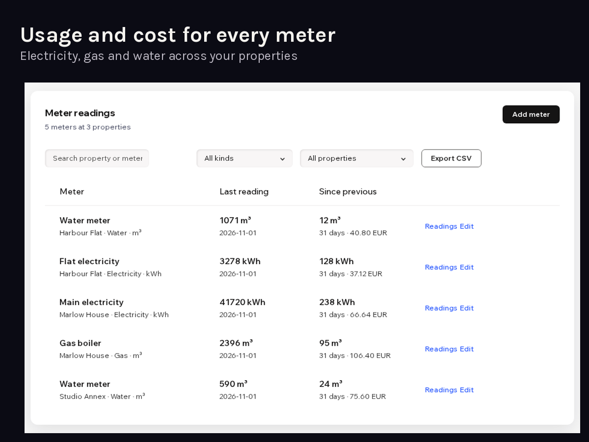

Utility: Meter Readings
Meter readings, usage and cost per property
- Gas, water and electricity per property
- Usage since the previous reading
- Cost per interval at each meter's tariff
- Free: 1 property, 3 meters, any readings

What it does
Rented flats, houses and small portfolios have meters that nobody enjoys reading: the gas, water and electricity numbers sit on paper or in a chat thread, and every month somebody works out the usage by hand. This app keeps one log of every meter, per property, and does the arithmetic.
Add a meter with its property, kind and unit, then type in the number whenever you read it. The dashboard shows the latest reading of every meter, the usage since the previous reading and how many days it covers. Open a meter to see its whole history, add a new reading, or delete a wrong entry. A number lower than the one before it is refused, so a mistyped digit does not turn into fake usage.
The free plan keeps one property and three meters, with unlimited readings on them. Premium removes the limits and adds the cost: each interval is multiplied by the meter's tariff, so a gas period, an electricity month or a water quarter shows in money as well as in units, with the total cost and a CSV export of every reading.
Readings stay in your site's dashboard under your own login, and nothing is sent anywhere else. Premium is $4 a month, or $3 a month billed yearly, with a 14-day free trial.
Price
Free
- 1 property and 3 meters
- Unlimited readings per meter
- Usage since the previous reading
- Reading history per meter
Premium
$4/month, or $3/month billed yearly ($36/year)
- Unlimited properties and meters
- Cost per interval at each meter's tariff, and the total
- Reading history per meter, with the interval usage
- CSV export of every reading